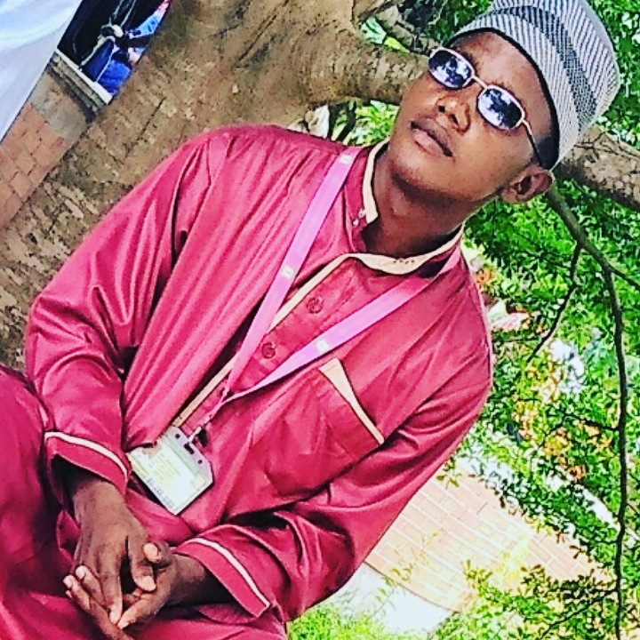

COMPOSITION ABOUT MYSELF

check my full picture
home page
My name is Olalekan Olawale,I was born on 8th of april 2000,I'm a bonafied student of Kwara State university, Faculty of Information and Communication Technology,studying Computer science.Academically ,I am interested in writing short stories about me.
I'm interested in computer science,music,sport and fantasy literature.computers first appeared in my life when I was eight. then I had got my first computer.
When I was growing up, I would watch wrestling with my dad and brothers on every friday,before we would go outside and do some small shopping around.I've loved it ever since
Accustomed to being around primarily adults, I was always matured for my age
even my own friends often annoyed me during my adolescent years.I had alot of people who invested in me, especially my parent.
My favorite colour is white and i love eating pounded yam and vegetable soup,my hobbies are playing football,swimming and singing,my main objective in life is to achieve my goal and come to think of it, what are my goals.
My goal in kwasu to be a successful Computer scientist so that i can make my mama proud..THANK YOU..